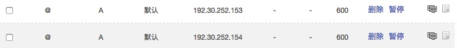
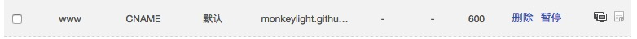

简介
用Hexo搭建网站主要就是两个配置文件，一个站点配置文件(/_config.yml)，另一个是主题配置文件(/themes/[themefolder]/_config.yml)，配置好这两个配置文件基本就可以了，剩下的都只是一些安装和部署。
Hexo
基本配置
- Hexo依赖于Node.js，需提前安装Node.js
安装Hexo，应用Node.js指令：
npm install hexo-cli -g新建Hexo工程
hexo init <folder>初始化Hexo
npm install
扩展功能
添加rss
npm install hexo-generator-feed --save站内搜索
npm install hexo-generator-search --save配置站点文件：
search: path: search.xml field: postGithub托管
npm install hexo-deployer-git --save配置站点文件：
deploy: type: git repository: https://github.com/monkeylight/monkeylight.github.io.git branch: master
常用命令
生成静态文件(public文件夹)
hexo generate/-g清除缓存文件(db.json)和已生成的静态文件(public文件夹)
hexo clean启动本地服务器
hexo server部署网站到托管平台
hexo deploy/-d新建文章
hexo new [layout] <title>layout有三种：post（博客）/ page（页面）/ draft（草稿）
例如，新建一个“关于”页：
hexo new page about
NexT主题
官方链接：http://theme-next.iissnan.com/
主题主要是一些配置信息的设置，官方文档里说得很详细，根据自己喜好和需要配置即可。但我在使用过程中遇到了一些问题，官方文档里没提及，在这分享一下：
官方推荐的Swiftype搜索用不了，据说是Switftype开始收费的原因，所以不支持了（-.- 只是听说）。
解决方法：
见上方Hexo页–>扩展功能–>站内搜索about页面使用无序列表没有小圆圈标识。
解决方法：
添加自定义样式，在配置文件/themes/next/source/css/_custom/custom.styl中添加代码：ul { list-style-type: circle; }
环境共享
单纯地用hexo部署网站，会有几个问题：
- 每次部署都会覆盖上一次的内容，上次的提交记录会被清除！这不方便我查看历史记录
- 共享配置环境的问题，我总不能每次换个地方都要重新配置一次hexo环境吧，那多恶心。
针对以上问题，我首先想到的是在Github上用多一个仓库来存储hexo的配置环境，一个用来手动提交网站配置和博客内容，一个用来一健部署托管后台。后来在网上看到更机智的，就是用一个仓库多分支就行了，没必要多仓库。
域名
域名方面有两个选择：
- 直接使用github的二级域名（username.github.io），免费！
- 自己买个域名。买吧，感觉多爽，哈哈。
个人域名
- 域名购买（我是在godaddy买的，这个看你喜好吧）
- 绑定github:
在hexo/source文件夹下新建文件：CNAME（无后缀名），添加内容：yourwebsite.com - 配置DNS，可以在godaddy的dns管理中配置，也可以用 DNSPod 来管理更快和稳定。配置项：
- 添加两条A记录分别指向Github服务器：
 - 添加一条CNAME记录指向你用hexo部署的Githubt仓库（例如我的：monkeylight.github.io）：

- 添加两条A记录分别指向Github服务器：
附：monkeylight.github.io 这个的是我的hexo环境配置，有兴趣的可以参考看看